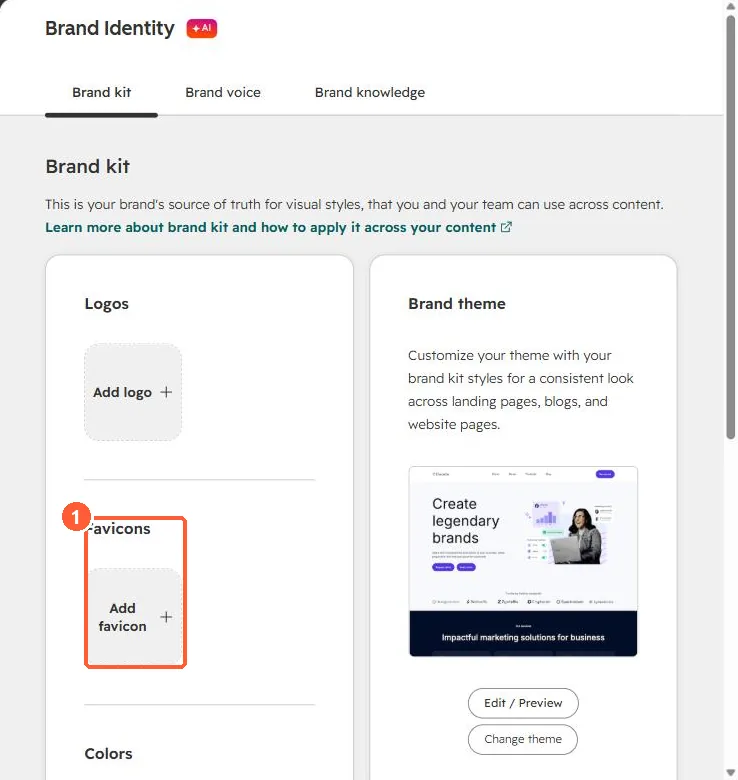
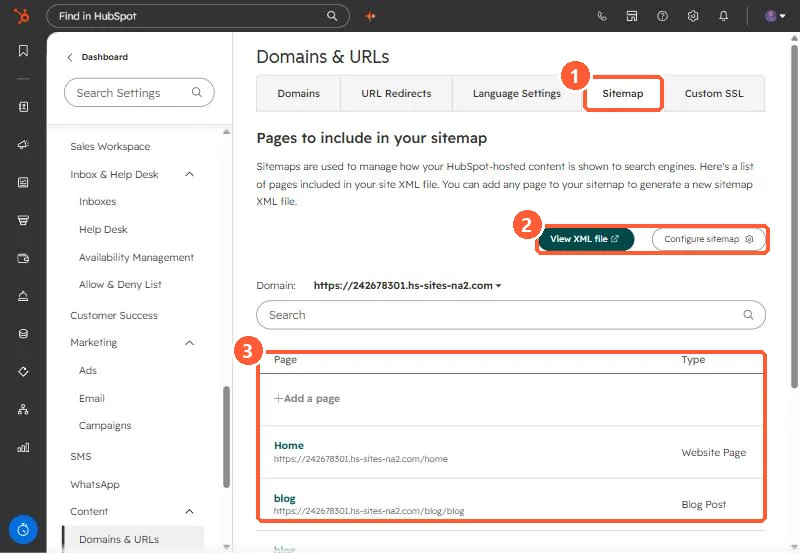
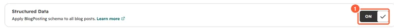
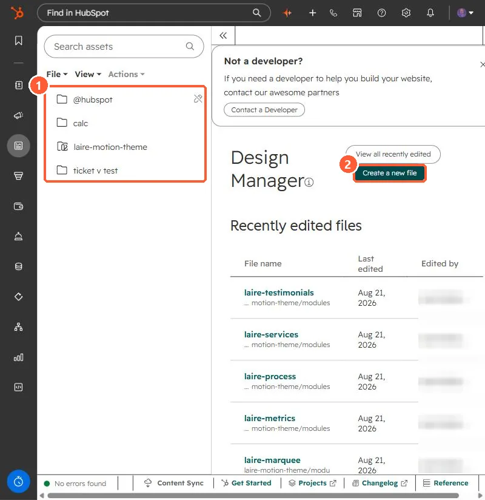

Short answer
Four site-wide settings decide how a HubSpot-hosted site looks in browsers and search. The brand kit (Marketing, Brand) holds the logo, favicon, colors, fonts and theme. The sitemap (Settings, Content, Domains & URLs, Sitemap) adds live website pages and blog posts automatically, but not landing pages. Structured data for blog posts is one switch in blog settings that applies BlogPosting schema; it was off by default for blogs created before June 2022. Anything else, such as Organization or Product schema, goes in the template or the page's head HTML. The favicon only applies to content hosted on HubSpot.
1. Brand kit and favicon
Go to Marketing, Brand. The brand kit holds the logo, favicon, brand colors, fonts and a theme used by pages and blogs. Editing it needs Super Admin or the Edit account defaults permission. With the Brands add-on, pick the brand from the dropdown at the top right first, because each brand has its own kit.


- Favicon: click Add Favicon and pick an image from the files tool or upload one. You can store up to 20 per brand. It only applies to content hosted on HubSpot, so a WordPress or Webflow site sets its own.
- Fonts: pick a fallback font with a similar x-height and weight to your custom font. Email clients like Gmail and Outlook show the fallback, see building marketing emails.
- Brand voice and knowledge: the same page has Brand voice and Brand knowledge tabs that HubSpot's AI tools use. See Agent Hub context.
A new favicon can take a while to show because browsers cache favicons. Check it in a private window before assuming it failed.
2. The sitemap
Open Settings, Content, Domains & URLs, then the Sitemap tab (1). Pick a domain to see its pages (3). View XML file (2) opens the file, which is also at /sitemap.xml on your domain.


| Content | In the sitemap? |
|---|---|
| Live website pages and blog posts | Automatically |
| Landing pages | Only if you add them with + Add a page |
| HubDB dynamic child pages | Only if the parent page is in the sitemap. They show in the XML, not the list. |
| Videos on HubSpot-hosted pages | Can generate video entries with title, description, tags and thumbnail |
- To remove a page, hover over it and click Remove.
- To set change frequency and priority, hover, click Options, pick values, and save.
- Campaign landing pages reached from ads usually do not need to be in it. Add the ones you want found in search.
For comparison, I read the sitemap of a live site on HubSpot's CMS on November 15, 2026. It listed 454 URLs with a lastmod date on each, image entries for page images, and 90 video entries, all generated by HubSpot. After you change pages, submit https://yourdomain.com/sitemap.xml in Google Search Console so Google rereads it.
3. Structured data for blog posts: one switch
In your blog settings (the blog's General tab), pick the blog and scroll to Structured Data, "Apply BlogPosting schema to all blog posts" (1):


HubSpot added this setting in June 2022. It was turned off for every blog that existed then and on for blogs created afterwards, so older portals often have it off. Turn it on unless your template already outputs its own BlogPosting JSON-LD, or the post will carry two copies.
On the live HubSpot blog I checked, the generated JSON-LD included the headline, author name and author page, publish and modified dates, the publisher with its logo, and mainEntityOfPage. Users in HubSpot's announcement thread point out it does not include the post's meta description.
4. Other schema: template or page head
For anything beyond BlogPosting, such as Organization, LocalBusiness, Product or Event, add JSON-LD yourself:
- One page: paste it into the page's settings under head HTML.
- Every page of a type: add it to the template in the design manager (1) so HubL fills in the values.


<script type="application/ld+json">
{
"@context": "https://schema.org",
"@type": "BlogPosting",
"headline": "{{ content.name }}"
}
</script>That pattern is from HubSpot's developer blog. Validate the result with Google's Rich Results Test before publishing,.
5. What is changing for 2027
- Fewer rich results. Google stopped showing How-to rich results in September 2023, announced in June 2025 it was phasing out several lesser-used structured data features, and in May 2026 added a deprecation notice to the FAQ rich result. Schema still helps search engines understand the page, but do not add FAQ or HowTo markup expecting a visual result.
- Brand context feeds AI. Brand voice and Brand knowledge sit next to the brand kit, and HubSpot's AI tools read them. Fill them in the same pass as logos and colors.
- Check old blogs. If your blog predates June 2022, the BlogPosting switch is probably still off.
Common questions
My favicon is not showing.
Browsers cache favicons, so try a private window. If the site is not hosted on HubSpot, HubSpot's favicon does not apply; set it on that platform.
Why are my landing pages not in the sitemap?
HubSpot only adds website pages and blog posts automatically. Add landing pages with + Add a page in the sitemap settings.
Does HubSpot add schema automatically?
For blog posts, yes, if the Structured Data switch in blog settings is on. For website and landing pages, add it yourself.
Should I still add FAQ schema?
Google has deprecated the FAQ rich result, so it no longer produces a visual result. Add it only if you have another reason to.
Sources
- HubSpot Knowledge Base: Edit a brand's logo, favicon, colors, fonts and theme
- HubSpot Knowledge Base: Use fonts in HubSpot
- HubSpot Knowledge Base: View and edit a HubSpot-hosted domain sitemap
- HubSpot Community: Setting to apply BlogPosting JSON-LD schema to blog posts (June 2022)
- HubSpot developer blog: How to use structured data in HubSpot
- Google Search Central: Documentation updates (FAQ deprecation, May 2026)
- Google Search Central: Simplifying the search results page (June 2025)
- HubSpot Community: Favicon not showing
- HubSpot Community: Add schema markup to blog